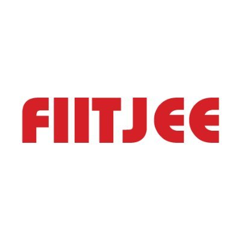
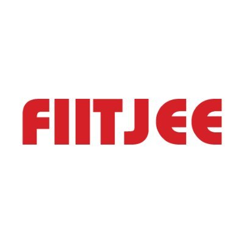
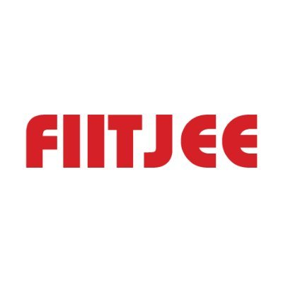

The underlying spirit of was "to promote technology and scientific thinking and innovation" a motto that has been
followed by every Techfest since. Wartech is an entirely student-organized body. Wartech is known for hosting a
variety of events that include competitions, exhibitions, lectures as well as workshops. The activities culminate in
a grand three-day event in the campus which attracts people including students, academia, corporates and the
general public.
It provides a platform for one and all to witness one of the most beautiful and groundbreaking amalgamations
1. Gryffindor is one of the four Houses. Gryffindor instructed the Sorting
Hat to choose students possessing characteristics he most valued, such
as courage, chivalry, and determination, to be sorted into his house. The
emblematic animal is a lion, and its colours are scarlet and gold. The
Gryffindor house emphasises the traits of courage as well as “daring,
nerve, and chivalry” , and thus its members are generally regarded
as brave, though sometimes to the point of recklessness.
2. Hufflepuff is the most inclusive among the four houses; valuing hard work, dedication, patience, loyalty, and fair play rather than a particular aptitude in its members. Students belonging to this house are known to be hard-working, friendly, loyal, honest and rather impartial. It may be that due to their values, Hufflepuffs are not as competitive as the other houses, and are more modest about their accomplishments. Hufflepuff is the most inclusive among the four houses; valuing hard work, dedication, patience, loyalty, and fair play rather than a particular aptitude in its students.
3. Ravenclaw -Members of this house are characterized by their wit, learning, and wisdom. The emblematic animal symbol is an eagle, and blue and bronze are its colours. Ravenclaws tend to be academically motivated and talented students. They also pride themselves on being original in their ideas, and methods.
4. Slytherin In establishing the house, Salazar instructed the Sorting Hat to pick students who had a few particular characteristics he most valued. Those characteristics include cunning, resourcefulness, leadership, and ambition. Slytherins tend to be ambitious, shrewd, cunning, strong leaders, and achievement-oriented. They also have highly developed senses of self-preservation. This means that Slytherins tend to hesitate before acting, so as to weigh all possible outcomes before deciding exactly what should be done.
